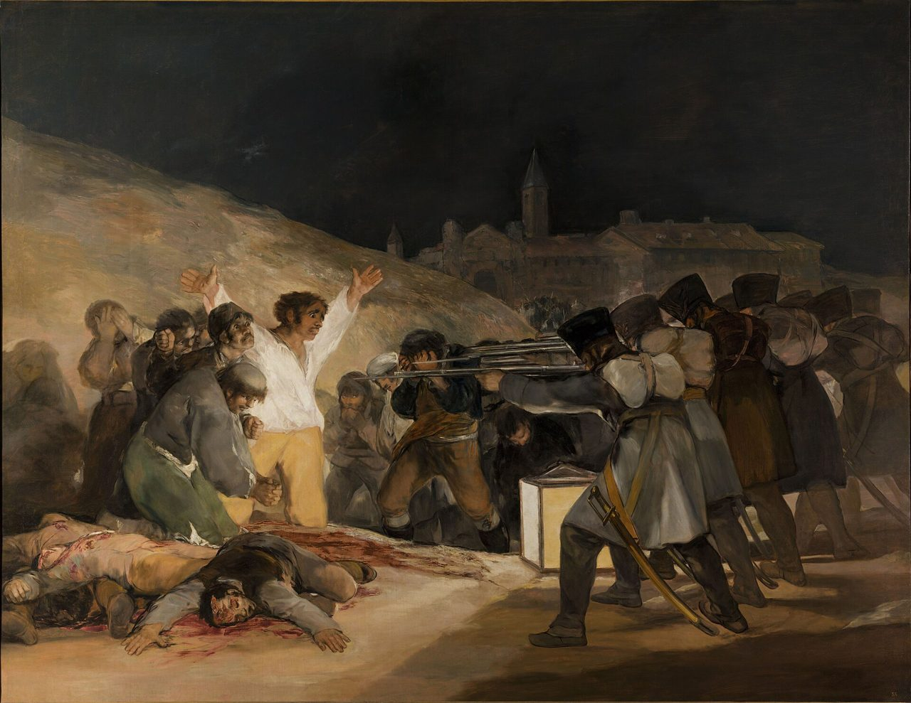

← 藝術101名畫背後的故事 EP15
1808 年 5 月 3 日
哥雅・1814

第一幅把戰爭畫成屠殺、沒有英雄的畫。
1808，馬德里的那一夜
1808 年 5 月 2 日，馬德里市民起義反抗拿破崙的軍隊。起義被鎮壓後，法軍在王子山一帶槍決了大批市民。六年後的 1814 年，法軍撤走，哥雅主動向攝政政府提議，用畫紀念這場起義。
沒有臉的士兵
畫面右邊的行刑隊排成一排、背對觀眾，看不到任何一張臉，像一台機器。左邊的受害者卻每一張臉都清清楚楚：恐懼、祈禱、遮住眼睛。
白襯衫的男人
中間偏左的男人張開雙臂，常被比作十字架上的基督，右手掌心還有像聖痕的傷口。照亮他的不是神光，是地上一盞方形燈籠。藝術史學者肯尼斯．克拉克稱它是第一幅在各方面都稱得上革命性的偉大畫作。
下次看到它，先看這裡
白襯衫的男人 張開雙臂，右掌有像聖痕的傷
背對的行刑隊 整排士兵背對觀眾，看不到臉
地上的方形燈籠 全畫唯一光源，照亮行刑現場
作品資料
哥雅（Francisco de Goya）
《1808 年 5 月 3 日》The Third of May 1808，1814
油彩、畫布 268 × 347 公分
馬德里 普拉多美術館（Museo del Prado）
《1808 年 5 月 3 日》The Third of May 1808，1814
油彩、畫布 268 × 347 公分
馬德里 普拉多美術館（Museo del Prado）